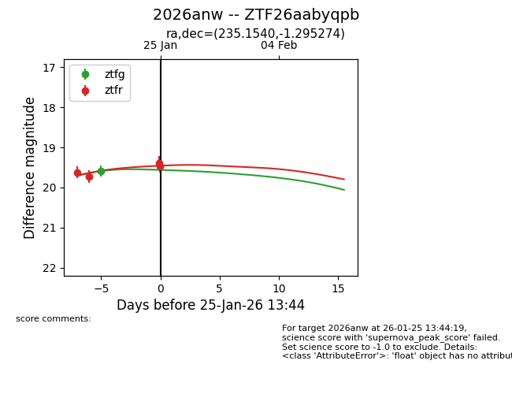
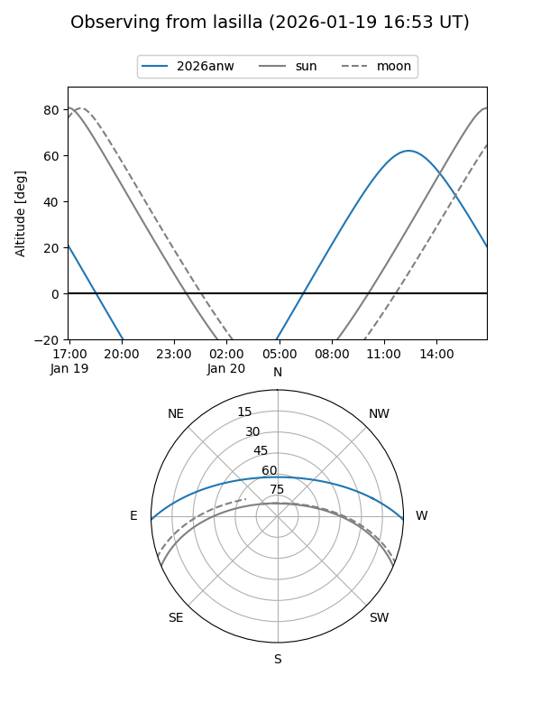
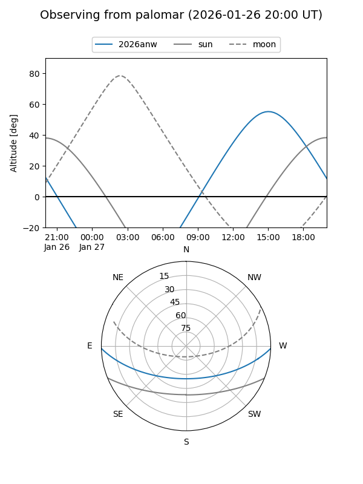
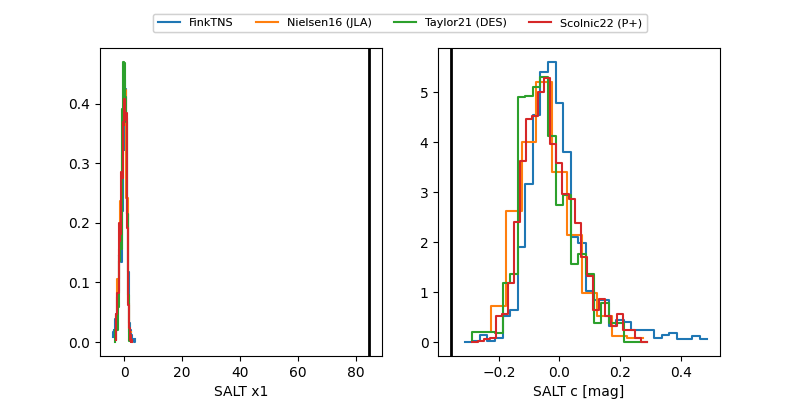

2026anw
Target 2026anw at 2026-01-26 21:36
Aliases and brokers:
FINK: link
Lasair: link
ALeRCE: link
TNS: link
YSE: link
alt names
ZTF26aabyqpb (ztf,fink_ztf)
2026anw (tns,yse)
Coordinates:
equatorial (ra, dec) = 235.1540,-1.29527
equatorial (HMS+DMS) = 15:40:36.96,-01:17:42.99
galactic (l, b) = (4.9583,+40.37928)
Flags:
Photometry:
last ztfg=19.59, ztfr=19.47
1 ztfg, 4 ztfr detections
Lightcurve

Visibility


Additional plots
